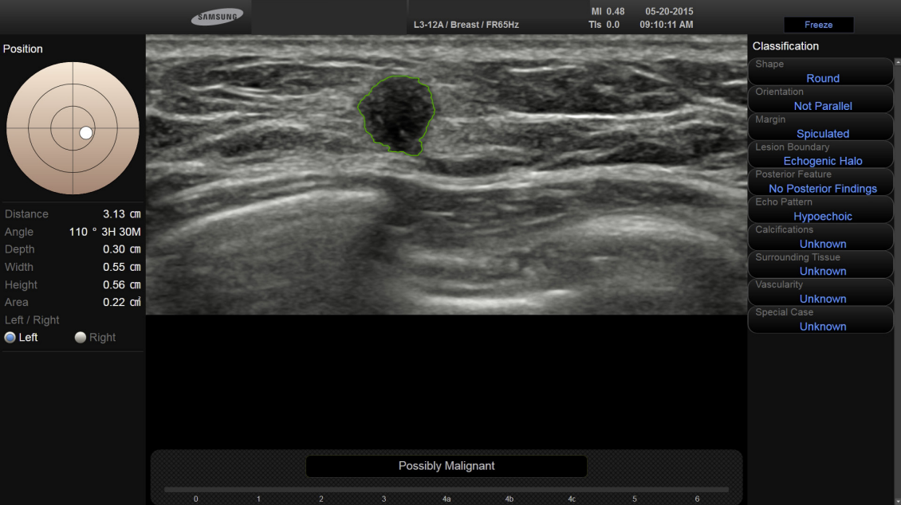
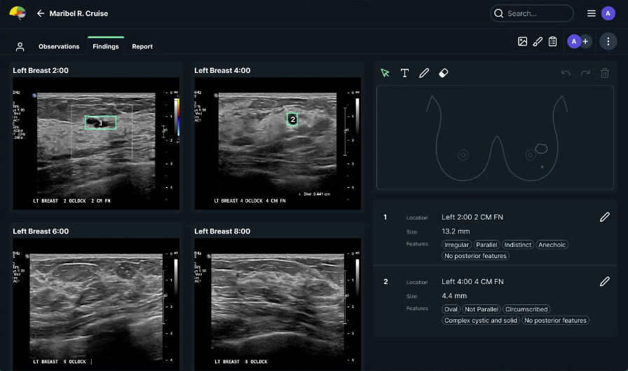

Commercial Systems
The paper “Updates in Artificial Intelligence for Breast Imaging” (Bahl 2022) reviews FDA approved software for multiple imaging modalities.
Breast Ultrasound CAD
- Beamworks CadAI
- Real time support for US unit to highlight suspicious lesions. After freezing an image, the image is segmented and a BIRADS score and characteristics are determined.
- The localization and visualization are likely similar to those in the paper Weakly-supervised deep learning for ultraound of breast cancer
- Koios DS Breast
- A video demo of DS Breast The 43 second video shows the user clicking (“Smart Click”) inside lesion in two views. We don’t know how those views were selected. The software produces a couple of BI-RADS descriptors, and a BI-RADS score. It also uses the user clicks to produce bounding boxes around the lesions.
- S-detect is a system built into some Samsung ultrasound machines. It attempts to determine BIRADS labels, segmention of lesion, and prediction of “normal”, “possibly benign”, or “possibly malignant”.
- This paper builds a nomogram on top to the output of S-detect and incorporates patient age, radiologist’s BIRADS score, and outputs from S-detect to give a probability of malignancy.
- A video demo of S-Detect Requires user input of seed-point or oval surrounding suspected lesion. Produces BIRADS score and characteristics.
- 
- See-Mode is a Canadian-approved system that detects lesions and determines BIRADS labels.
- A MobiHealthNews article about See-Mode.
- A 10 minute presentation about See-Mode
- 
- Mindray
- A MobiHealthNews article about China’s Mindray.
- A video demo of Mindray Smart Breast It determines BIRADS labels. Not sure if it produces an overall BIRADS score.
Mammography CAD
- Volpara Breast Health Platform
- A MobiHealthNews article about Volpara.
- A MobiHealthNews article about Whiterabbit.
References
Bahl, Manisha. 2022. “Updates in Artificial Intelligence for Breast Imaging.” Seminars in Roentgenology 57 (2): 160–67. https://doi.org/10.1053/j.ro.2021.12.005.